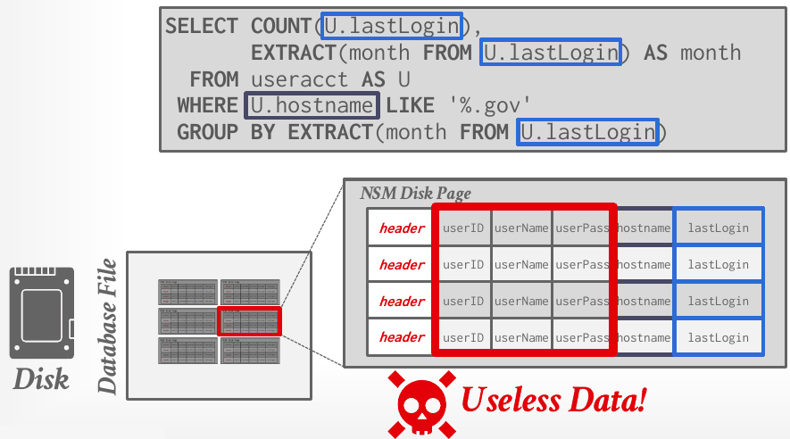
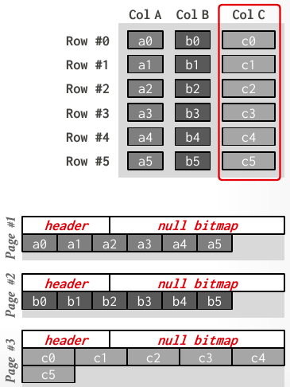
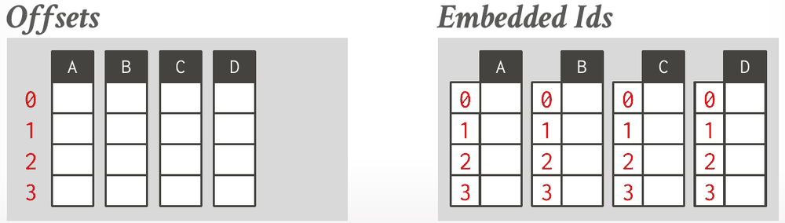
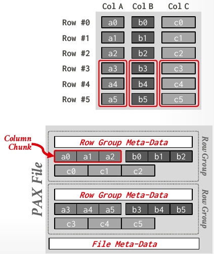

Database Internals in Go · Unit 1 · Lesson 4
Storage Models: NSM, DSM, and PAX
Which attributes a DBMS stores together, why the answer depends on the workload, and how to count the pages a query must read under each choice.
Lessons 1–3 assumed a row-oriented storage model, in which all of a tuple's attributes sit together in one page. The relational model never required that, and for some workloads it isn't the best layout. Lecture #06 sorts workloads into two kinds, transactional and analytical, and matches each with a storage model: the row store, the column store, and PAX, a hybrid used by formats such as Parquet. CMU's HW2 then turns the choice into arithmetic: how many pages does each model read for a given query?
An application stores account balances, and rounding errors are unacceptable. Which type does lecture #03 point to, and how is it stored?
Lesson 1: how does the pre-built disk.FileManager (BusTub's DiskManager) find where a page lives in the database file?
On Lecture #02's example database, you want the courses whose students' average gpa exceeds 3.9. Which clause does it?
Workloads: OLTP, OLAP and HTAP
- OLTP (on-line transaction processing): fast, simple operations that read or update a small amount of data each time, usually about a single entity. Amazon's storefront is the notes' example: adding to a cart or buying something touches only your account. These workloads are typically write-heavy, and they are usually the kind of application people build first.
- OLAP (on-line analytical processing): complex queries that read large portions of the database, spanning many entities, to compute aggregates. They usually run on data collected by OLTP applications; the notes' example is choosing personalized ads from everyone's carts and purchases. These workloads are read-heavy.
- HTAP (hybrid transaction and analytical processing): OLTP and OLAP together on the same database instance.
The lecture's running example is a Wikipedia-like schema with tables useracct, pages and revisions. Its OLTP queries look up one page with its latest revision, record a user's login, and insert a new revision:
SELECT P.*, R.* FROM pages AS P
INNER JOIN revisions AS R ON P.latest = R.revID
WHERE P.pageID = ?
UPDATE useracct SET lastLogin = NOW(), hostname = ? WHERE userID = ?
INSERT INTO revisions VALUES (?,?…,?)Its OLAP query counts the logins per month of users whose host name ends in .gov:
SELECT COUNT(U.lastLogin),
EXTRACT(month FROM U.lastLogin) AS month
FROM useracct AS U
WHERE U.hostname LIKE '%.gov'
GROUP BY EXTRACT(month FROM U.lastLogin)The OLTP queries want whole tuples, one at a time. The OLAP query wants two attributes, hostname and lastLogin, from every tuple. A DBMS's storage model is how it physically organizes tuples on disk and in memory, and the right one depends on which of these patterns dominates. The lecture covers three: the n-ary storage model (NSM), the decomposition storage model (DSM) and PAX.
NSM: the row store
In the n-ary storage model, a row store, the DBMS stores (almost) all of a tuple's attributes contiguously in a single page. Everything from Lessons 1–3 was NSM: a disk-oriented NSM system keeps each tuple's fixed- and variable-length attributes together in a slotted page, and identifies the tuple by its record ID (page#, slot#). NSM page sizes are typically a constant multiple of the 4 KB hardware page.
NSM is ideal for OLTP. To fetch a user's tuple, an index lookup (Unit 3) leads to one page that holds the entire tuple, and an insert writes the whole tuple into one free slot. For the OLAP query, though, NSM reads mostly data that the query never uses:

hostname and lastLogin, an NSM system must read every page in full, so most of each page it reads (userID, userName, userPass) is useless to the query (Lecture #06, slide 16).| NSM advantages | NSM disadvantages |
|---|---|
| Fast inserts, updates and deletes. Good for queries that need the entire tuple (OLTP). Can use index-organized physical storage for clustering. | Bad for scanning large portions of a table, or a subset of its attributes. Terrible memory locality in access patterns. Hard to compress, because one page mixes several value domains. |
#06 Storage Models & Compression, "Database workload types" (7:28), slides 6–17: OLTP, OLAP and HTAP, the Wikipedia example, and NSM with its OLTP and OLAP examples.
DSM: the column store
In the decomposition storage model, a column store, the DBMS stores a single attribute for all tuples contiguously. It is ideal for OLAP, where read-only queries scan large parts of a table but only a subset of its attributes. The price is that the DBMS must split each tuple into its attributes on write and stitch the attributes back together on read.
Physically, each attribute's values sit in their own pages, as an array of fixed-length values, with a header holding metadata about the whole column, such as a null bitmap:

Now the OLAP query reads only the hostname pages, to find the .gov users, and then the lastLogin pages. It never touches userID, userName or userPass.
Tuple identification
The DBMS needs a way to find the other attributes of the tuple a value belongs to. The lecture gives two choices:

- Fixed-length offsets, the common choice. Every value of an attribute has the same length, so the value at position i in one column belongs to the same tuple as the value at position i in every other column. HW2 calls this "DSM with implicit offsets".
- Embedded tuple IDs. Each value is stored with its tuple's ID, and the DBMS keeps a mapping to jump to each attribute with that ID. Storing an ID with every single value has a large storage overhead; the slide's verdict is "Don't do this!"
Fixed-length offsets need fixed-length values. Padding variable-length values to a fixed length is wasteful, especially for large attributes. The better approach is dictionary compression, which replaces repetitive variable-length values with fixed-length codes, typically 32-bit integers; that's Lesson 5.
| DSM advantages | DSM disadvantages |
|---|---|
| Less wasted I/O per query, because the DBMS reads only the data it needs. Faster query processing, from better locality and cached data reuse. Better data compression. | Slow for point queries, inserts, updates and deletes, because tuples must be split, stitched back together and reorganized. |
PAX: columns inside row groups
OLAP queries almost never access a single column on its own: at some point the DBMS must fetch other columns and stitch tuples back together. So the ideal is a columnar format that still keeps each tuple's data physically close. PAX (Partition Attributes Across) is a hybrid storage model that vertically partitions attributes within a database page. It aims for the faster processing of columnar storage with the spatial locality of row storage. Parquet (2013), ORC (2013), Arrow (2016), Nimble (2023) and Vortex (2025) all use it.

The rows are first partitioned horizontally into row groups. Within each row group, the attributes are partitioned vertically into column chunks, so each row group works like a small column store for its rows. Each row group has its own metadata header about its contents, and a global metadata directory records the offsets of the file's row groups. In immutable files, such as Parquet and ORC, that directory is stored in the footer.
#06 Storage Models & Compression, "Columnar storage models" (26:25), slides 18–26: DSM's layout and OLAP example, tuple identification, variable-length data, and PAX.
Running OLTP and OLAP together
Since an OLAP DBMS is better at analytical queries than an OLTP DBMS, it makes sense to run them there. But new data arrives at the OLTP side, so it has to move. With two separate systems (a bifurcated environment), the data is moved by Extract-Transform-Load (ETL), or extracted and loaded first and transformed inside the OLAP database (ELT).
A single DBMS can also serve both workloads by exploiting how data ages: a tuple is "hot" when it enters the database and is updated less often as it gets older. This hybrid storage model (not to be confused with PAX) runs separate execution engines for NSM and DSM data, stores new data in NSM for fast OLTP, migrates it to DSM for efficient OLAP, and combines the two engines' results so the application sees one logical database. There are two designs:
- Fractured mirrors (Oracle, IBM DB2 Blu, Microsoft SQL Server) keep a second copy of the database in a DSM layout that is updated automatically. Every update goes to the NSM copy first and is eventually copied into the DSM mirror. If the DBMS supports updates, it must invalidate the changed tuples in the mirror.
- A delta store (SAP HANA, Vertica, SingleStore, Databricks, Google Napa) stages updates in an NSM table. A background thread migrates them to the DSM data, batching large chunks and writing them out as PAX files, then deletes the migrated records from the delta store.
The lecture's conclusion: choose the storage model for the target workload. OLTP means a row store; OLAP means a column store.
#06 Storage Models & Compression, "Hybrid storage models" (39:02), slides 48–54: moving data from OLTP to OLAP, fractured mirrors and the delta store.
Counting pages
CMU's HW2 turns storage models into arithmetic: how many pages must the DBMS read to answer a query? All of its Question 2 uses one setup.
HW2 Q2 setup
The database has one table, P(player_id, team_id, G_all, HR), where player_id is the primary key and all four attributes have the same fixed width. P has 20,000 tuples that fit into 200 pages. Ignore page and tuple headers, and assume that:
- the DBMS has no additional metadata;
- P has no indexes, not even on
player_id; - none of P's pages start in memory, and memory can hold an unlimited number of pages;
- the tuples' contents always make each query run as long as possible and read as many pages as possible;
- the tuples can be in any order, which is what the minimum and maximum page counts depend on.
Derive the layout first. Under NSM, each page holds 20,000 / 200 = 100 tuples. Under DSM, each attribute takes a quarter of the space: 200 / 4 = 50 pages per attribute, each holding 400 values. With implicit offsets, the tuple at position i has its value of every attribute at position i of that attribute's column, so it sits on the same-numbered page in every column.
Then count with four rules:
- With no index, the DBMS must scan the attribute in the
WHEREclause, and under worst-case contents every tuple may match. - An equality on the primary key matches at most one tuple, so once every key the query names has been found, the scan can stop. The best ordering puts the matches early; the worst puts one on the last page.
- With implicit offsets, the DBMS jumps straight to a match's other attributes: one page per distinct page touched, not the whole column.
- With unlimited memory, a page read once is never read from disk again.
Work it out: count the pages
Practice the rules on a new table before the homework questions. R(a, b, c, d, e) has five attributes of the same fixed width, and a is the primary key. It has 50,000 tuples in 500 pages, no indexes and no metadata, nothing starts in memory, memory is unlimited, and contents are worst case.
-
What to think about
How many pages does each DSM column take? Which columns does the query touch, and how many of their values does it need when every tuple might match?
The method
NSM: every page holds every attribute, and every tuple must be checked. DSM: each column takes 500 / 5 = 100 pages. Scan all of
b; with worst-case contents every tuple matches, so all ofeis needed too.The result
NSM: 500 pages. DSM: 100 + 100 = 200 pages.
-
What to think about
ais the primary key, so at most one tuple matches. When can the scan stop, and which tuple orders give the best and the worst case?The method
Best case: the match is on the first page scanned. Worst case: it is on the last. In DSM, after finding the match in
a's column, read the onecpage at the same offset.The result
NSM: minimum 1, maximum 500. DSM: minimum 1 + 1 = 2, maximum 100 + 1 = 101.
The homework behind these questions
The questions marked HW2 come from CMU's Homework #2: Question 2, with the original figures. Work each one out on paper first, then click the option you got. The quiz tells you at once whether it matches CMU's official answer, and explains why. To compare your working step by step, open the official solutions for Question 2.
Check your understanding
The first four questions are HW2 Question 2 (all seven parts), using the setup above. The answers match CMU's official solutions.
HW2 Q2(a): how many pages will the DBMS potentially have to read for SELECT MAX(HR) FROM P WHERE team_id = 15445, under NSM and under DSM with implicit offsets?
HW2 Q2(b)i: under NSM, what are the minimum and maximum numbers of pages the DBMS will potentially have to read for SELECT HR, team_id FROM P WHERE player_id = 1 OR player_id = 999?
HW2 Q2(b)ii: under DSM with implicit offsets, what are the minimum and maximum numbers of pages for the same query, SELECT HR, team_id FROM P WHERE player_id = 1 OR player_id = 999?
HW2 Q2(c): under DSM with implicit offsets, what is the minimum number of pages the DBMS will potentially have to read from disk for SELECT MIN(player_id) FROM P WHERE HR = (SELECT MIN(HR) FROM P)?
Which description matches PAX as presented in lecture #06?
Primary sources: CMU 15-445/645 Fall 2025 lecture #06, Storage Models & Compression (slides 4–26 and 48–54, notes §1–2); Homework #2 Question 2 and its official solutions.